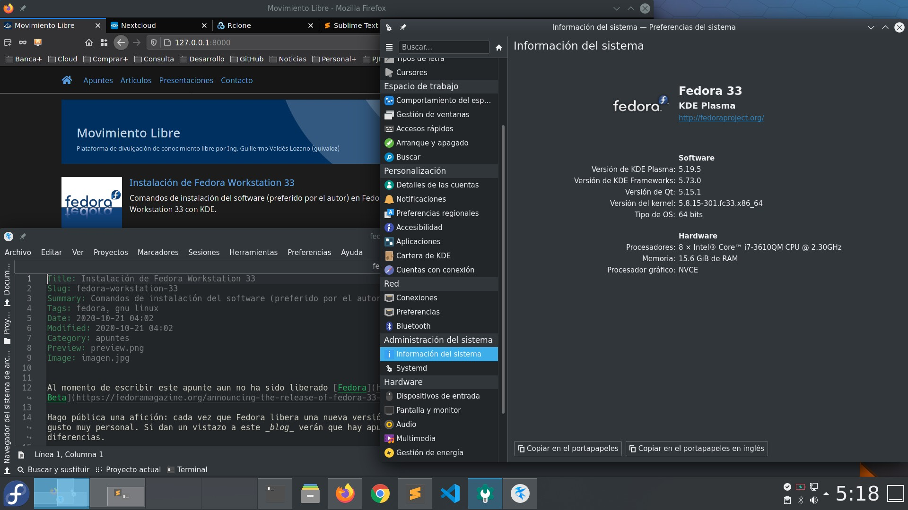

Instalación de Fedora Workstation 33
Comandos de instalación del software (preferido por el autor) en Fedora Workstation 33 con KDE.

ACTUALIZADO: Ya está disponible Fedora en su versión 33; que entre sus novedades usa BTRFS por defecto como sistema de archivos.
Hago pública una afición: cada vez que Fedora libera una nueva versión, hago una instalación nueva desde formatear hasta restaurar (y revisar) mi home. Es mi gusto muy personal. Si dan un vistazo a este blog verán que hay apuntes con los pasos de las versiones anteriores; al compararlos podremos observar ligeras diferencias.
Instalación de Fedora 33
Luego de instalar Fedora 33 Spin con KDE Plasma con una memoria USB hacemos una actualización...
$ sudo dnf --refresh check-update
$ sudo dnf update
Y reiniciamos...
# systemctl reboot
El Spin de Fedora KDE Plasma viene muy completo
Sólo necesito pocas utilerías del sistema...
$ sudo dnf install system-storage-manager
$ sudo dnf install pwgen youtube-dl hwinfo htop
Y otras cercanas a KDE...
$ sudo dnf install kate filelight krename
De parte de las herramientas para gráficas instalamos GIMP e Inkscape...
$ sudo dnf install gimp
$ sudo dnf install inkscape
Si tiene colección de libros electrónicos use Calibre...
$ sudo dnf install calibre
Si necesita virtualizar recomiendo Libvirt...
$ sudo dnf group install 'Virtualización' --with-optional
Instalar software para contenedores
Fedora dejó atrás a Docker e impulsa los contenedores con Podman...
$ sudo dnf group install 'Administración de contenedores'
Instalar Google Chrome
Hay que instalar repositorios extras...
$ sudo dnf install fedora-workstation-repositories
$ sudo dnf update
$ sudo dnf repolist --all
Luego activar el repositorio...
$ sudo dnf config-manager --set-enabled google-chrome
$ sudo dnf update
E instalar Google Chrome...
$ sudo dnf install google-chrome-stable
Aproveche para agregar tipografías...
$ sudo dnf install google-roboto-condensed-fonts google-roboto-fonts google-roboto-mono-fonts
$ sudo dnf install google-droid-fonts-all
Instalar Visual Studio Code
Microsoft a dado al mundo del Software Libre a Visual Studio Code que es un entorno de desarrollo muy completo.
Según la documentación oficial se debe configurar el repositorio así...
$ sudo rpm --import https://packages.microsoft.com/keys/microsoft.asc
$ ls /etc/yum.repos.d/
$ sudo sh -c 'echo -e "[code]\nname=Visual Studio Code\nbaseurl=https://packages.microsoft.com/yumrepos/vscode\nenabled=1\ngpgcheck=1\ngpgkey=https://packages.microsoft.com/keys/microsoft.asc" > /etc/yum.repos.d/vscode.repo'
$ cat /etc/yum.repos.d/vscode.repo
E instalar con...
$ sudo dnf check-update
$ sudo dnf install code
ACTUALIZADO: Para desarrollar software con Python installo Python Classroom para tener varias versiones y herramientas adicionales...
$ sudo dnf groupinstall "Python Classroom"
Instalar Sublime Text
Sublime Text es un editor de código de pago, minimalista y poderoso...
$ sudo rpm -v --import https://download.sublimetext.com/sublimehq-rpm-pub.gpg
$ sudo dnf config-manager --add-repo https://download.sublimetext.com/rpm/stable/x86_64/sublime-text.repo
$ sudo dnf update
$ sudo dnf install sublime-text
Instalar LibreOffice
Indispensable tener la suite de ofimática...
$ sudo dnf group install --with-optional LibreOffice
$ sudo dnf install libreoffice-help-es libreoffice-langpack-es
Instalar LaTeX
Así como las herramientas profesionales de LaTeX para crear documentos y TexStudio como editor...
$ sudo dnf install texlive-scheme-tetex
$ sudo dnf install texlive-collection-latexextra
$ sudo dnf install texlive-collection-pstricks
$ sudo dnf install texlive-babel-spanish texlive-babel-spanish-doc texlive-hyphen-spanish
$ sudo dnf install texlive-babel-english texlive-babel-english-doc texlive-hyphen-english
$ sudo dnf install texstudio
RPM Fusion
Software de terceros que no se encuentra en los repositorios de Fedora, se descarga desde RPM Fusion. En particular instalo reproductores y editores de video...
$ sudo dnf install https://mirrors.rpmfusion.org/free/fedora/rpmfusion-free-release-$(rpm -E %fedora).noarch.rpm https://mirrors.rpmfusion.org/nonfree/fedora/rpmfusion-nonfree-release-$(rpm -E %fedora).noarch.rpm
$ sudo dnf update
$ sudo dnf install ffmpeg ffmpegthumbs
$ sudo dnf install mpv
$ sudo dnf install kdenlive frei0r-plugins
Clientes para la nube
Nuevos aliados en esta instalación es el cliente de escritorio para Nextcloud...
$ sudo dnf install nextcloud-client
Y el comando RClone para sincronizar con múltiples servicios de la nube...
$ sudo dnf install rclone